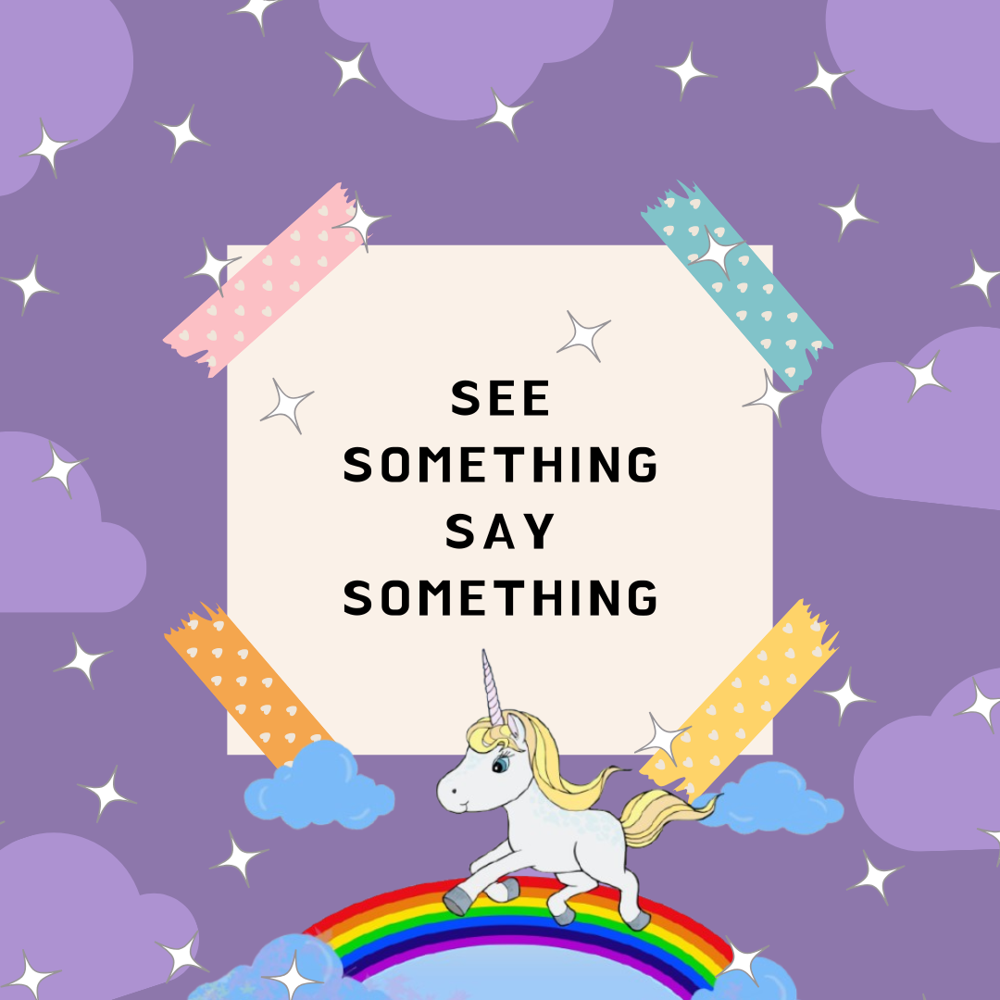
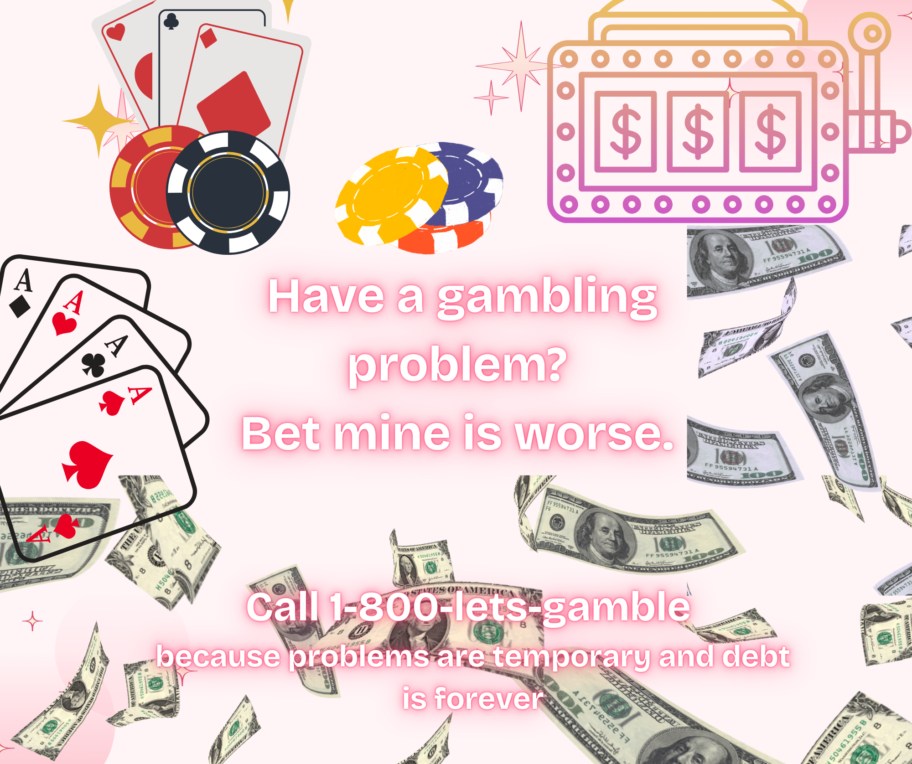

Especially if it's someone who hates cats. That's not okay.
🚨 OFFICIAL POSTER ZONE 🚨

Do your part. Report shady vibes and NC State haters.
😤 Catharsis Complaint Corner (Fridays Only)
We take your petty grievances seriously. (Unless they involve glitter or cats. Then you're on your own.)
- 🔸 Pollen in my eyes = betrayal by nature
- 🔸 NC driver's can't driver?! Shocking news.
- 🔸 Ants in the kitchen again??? This is war
- 🔸 Sleep Deprivation is the new trend. Maybe. I could be hallucinating that.
Come cry in a circle. Tissues not provided. Whining encouraged but not listened to.
GAMBLING STRIKES AGAIN

Bet your soul for $1.75 and three pencils!
🎰 The Totally Legal™ Gambling Corner
Feeling lucky? Spin the imaginary wheel and bet your dignity!
- 🎲 Lost your lunch money? Double or nothing with your GPA!
- 🃏 Bet your friend’s left shoe and your sanity.
- 💸 Odds of winning: 1 in “why are you like this?”
- 🍀 Winners get bragging rights. Losers get sprayed with perfume.
"The house always wins... want to bet on it? You're due for a win soon don't you think?"